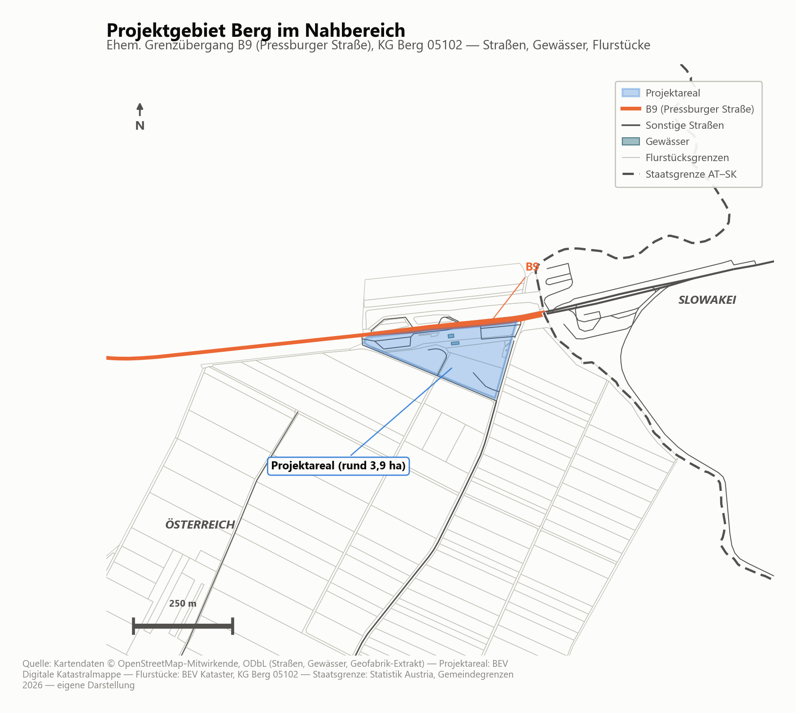
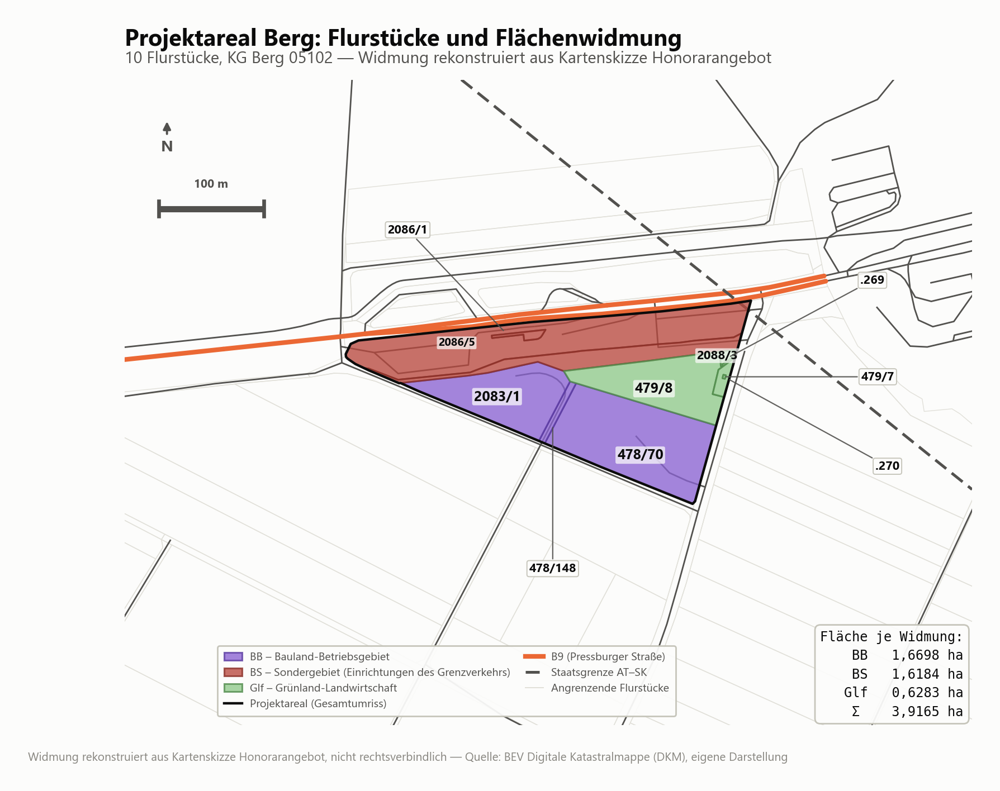
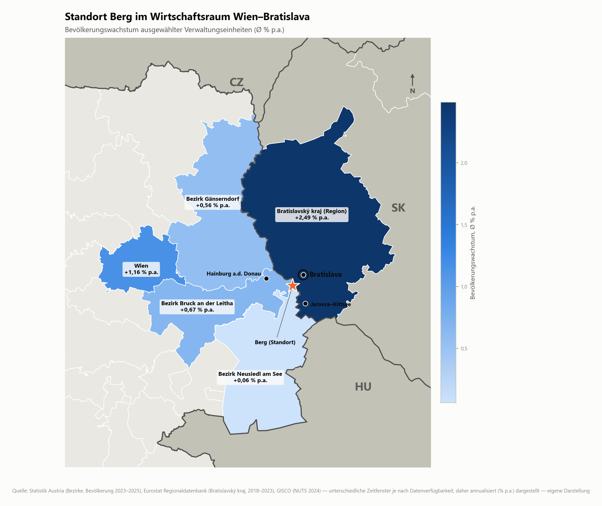
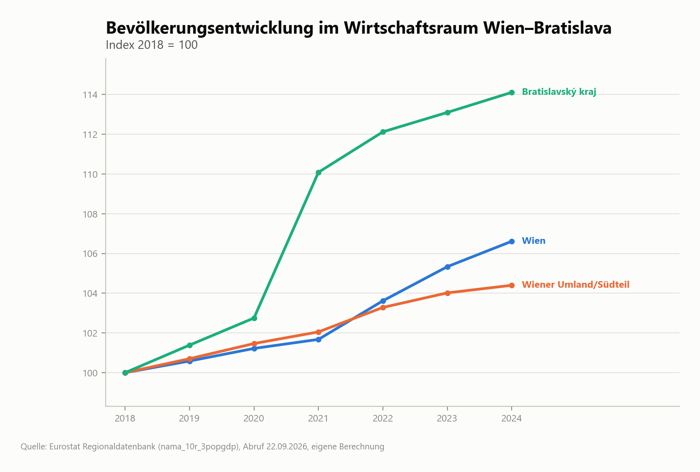
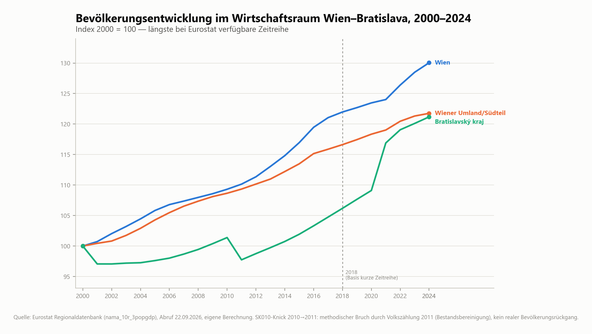
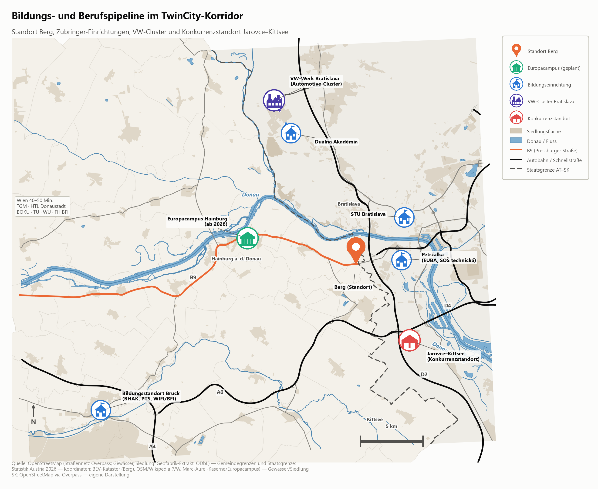
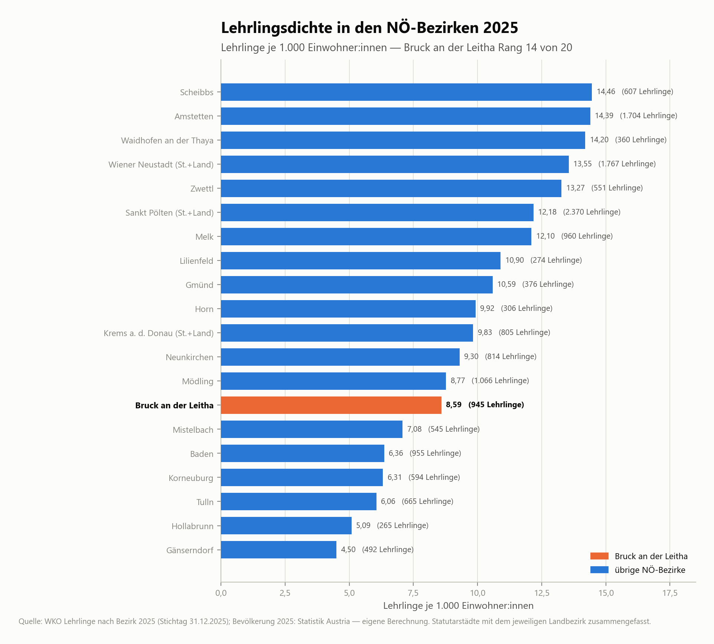
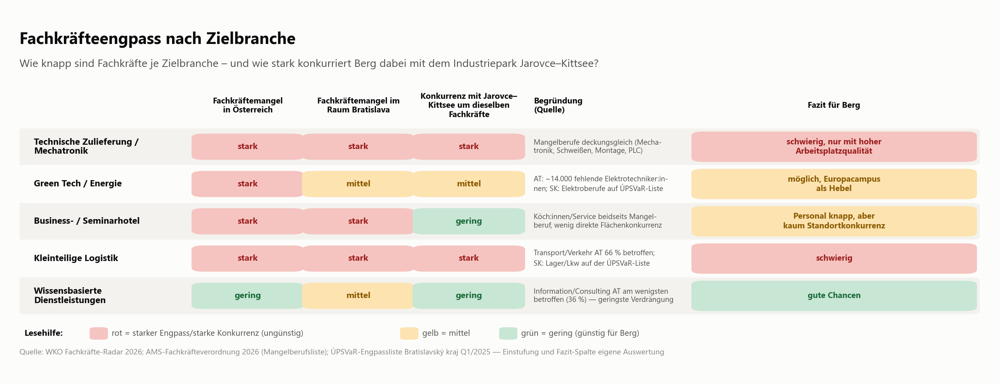
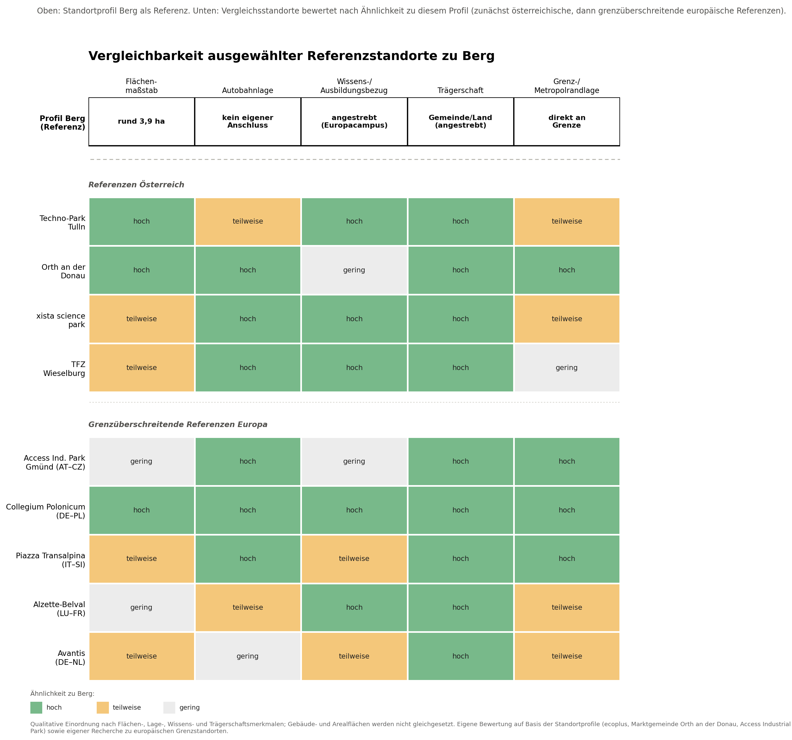
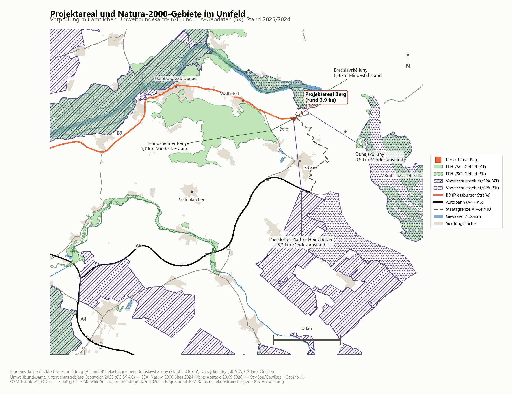

Kurzfassung
Zentrale Befunde auf einen Blick
Fasst die Kernaussagen der Kapitel 2 bis 5 zusammen — ersetzt nicht die differenzierten Einschätzungen und Einschränkungen in den Fachkapiteln, auf die jeweils verwiesen wird.
- Lage und TwinCity-Dynamik: Berg liegt im Kern der TwinCity-Region Wien–Bratislava; der Bratislavský kraj wuchs 2018–2024 mit +14,1 % deutlich dynamischer als Wien und das Wiener Umland/Südteil — ein Wachstumsschub, der erst eine Entwicklung der letzten rund acht Jahre ist (Kap. 2).
- Fachkräftepotenzial — Chancen: Ein doppeltes, grenzüberschreitendes Einzugsgebiet aus Wien und Bratislava sowie der für Sommer 2028 geplante Europacampus Hainburg eröffnen Bildungs- und Rekrutierungsbezüge, sofern konkrete Kooperationen vereinbart werden (Kap. 3).
- Fachkräftepotenzial — Engpässe: Der heimische Talente-Pool wächst nur schwach und altert relativ; Mechatronik/technische Zulieferung sind beidseits der Grenze amtlich als Mangelfeld ausgewiesen und stehen in direkter Konkurrenz zum VW-Cluster Jarovce–Kittsee (Kap. 3).
- Marktdynamik auf Proxy-Basis: Mangels echter Flächennachfragedaten (ecoplus) stützt sich die Einschätzung auf drei indirekte Indikatoren (Gründungsintensität, Baugrundpreise, slowakische Investitionsstruktur), die auf ein günstiges, aber nicht quantifiziertes Umfeld hindeuten (Kap. 3).
- Benchmarking-Lehre: Tragfähige Referenzstandorte für Berg sind klein, öffentlich gesteuert und thematisch verankert (Tulln, Orth an der Donau, xista, Wieselburg); die großflächigen Autobahnstandorte im Grenzraum sind Wettbewerbsreferenzen, aber keine Entwicklungsmodelle. Europäische Grenzbeispiele wie der Access Industrial Park Gmünd–České Velenice, das Collegium Polonicum Frankfurt (Oder)–Słubice, die Piazza Transalpina Gorizia–Nova Gorica, Alzette-Belval und Avantis Aachen–Heerlen liefern trotz deutlich größerem Flächenmaßstab übertragbare Governance-Prinzipien — und, im Fall Avantis, ein Warnbeispiel für ein zu unscharfes Zielprofil (Kap. 4).
- Empfohlene Positionierung: kleinteilig, hochwertig und komplementär statt konkurrierend zu Jarovce–Kittsee, mit Schwerpunkt auf wissens- und ausbildungsnahen Nutzungen sowie auf Zielbranchen mit geringerem Verdrängungswettbewerb (Kap. 5.1).
- Zentrale Restriktion Flächenwidmung: Ein Teil des rund 3,9 ha großen Areals ist als Grünland-Landwirtschaft (Glf) gewidmet und steht der Betriebsgebietsentwicklung erst nach erfolgreicher Umwidmung zur Verfügung (Kap. 5.2).
- Zentrale Restriktion ÖV: Die „letzte Meile“ zum Areal ist ungelöst (ÖV-Güteklasse D); der Testbetrieb der Buslinie 902 bietet eine Chance, ist aber noch kein gesicherter Standortvorteil (Kap. 3, 5.5).
- Zentrale Restriktion Datenlage: Belastbare, quantifizierte Flächennachfragedaten (ecoplus, Wirtschaftskammer) fehlen bislang; die vorliegenden Proxy-Indikatoren sind eine Tendenzaussage, keine Nachfrageanalyse (Kap. 3, 5.5).
- Nächste Schritte: Kooperationsmöglichkeiten mit dem Europacampus sondieren, den Testbetrieb der Buslinie 902 auswerten, echte Flächennachfragedaten nachreichen und die vertiefende Restriktionsanalyse (Büro LP) mit den Büro-M-Hinweisen aus Kapitel 5.2 abgleichen (Kap. 5.5).
Kapitel 01
Einleitung & Projektareal
Grundlagenanalyse für ÖEK-Anpassung, Flächenwidmung und spätere Ausschreibung — mit Fokus auf den grenzüberschreitenden Wirtschaftsraum Wien–Bratislava.
Die Gemeinde Berg und das Land Niederösterreich beabsichtigen die gemeinsame Entwicklung und Verwertung eines Areals im Bereich des ehemaligen Grenzübergangs Berg an der B9. Ziel ist ein hochwertiger, arbeitsplatzintensiver und nachhaltig ausgerichteter Betriebsstandort mit klarem Profil in der TwinCity-Region Wien–Bratislava.
Das Areal liegt unmittelbar an der Staatsgrenze zur Slowakei (Bezirk Bruck an der Leitha). Es umfasst rund 3,9 ha und setzt sich aus zehn Flurstücken mit den Widmungskategorien Bauland-Betriebsgebiet (BB), Sonderfläche für Einrichtungen des Grenzverkehrs (BS) sowie Grünland-Landwirtschaft (Glf) zusammen. Die Flurstücksabgrenzung wurde aus der amtlichen Katastralmappe (BEV) rekonstruiert und ist für Analysezwecke ausreichend genau; für rechtsverbindliche Zwecke ist eine Verifizierung mit Gemeinde bzw. Vermessungsamt vorgesehen.
Symmetrischer Gigabit-Anschluss (FTTH) von A1 am Zollamtsstandort, Datenstand Q1/2026. Kein Fördergebiet — die Versorgung ist privatwirtschaftlich bereits gelöst.
5G bis 563 Mbit/s (Drei) sowie 4G von Magenta, Drei und A1. Für digitalisierungsintensive Betriebe ist die letzte Meile leitungsgebunden kein Engpass.
Direkte Lage an der B9 (Pressburger Straße), der historischen Achse Wien–Bratislava. Kein eigener Autobahnanschluss auf österreichischer Seite — das höherrangige Netz liegt aber in geringer Entfernung (A6 rund 4,5 km, slowakische D2 rund 1 km Luftlinie zur Trasse).
Rollenteilung in der Arge
Büro LP
- Standörtliche Ausgangssituation
- Raumordnungsrechtliche Rahmenbedingungen
- Erschließungs- und Eigentumssituation
Büro M — dieses Dokument
- Einordnung in den Wirtschaftsraum TwinCity
- Entwicklungstendenzen & Standortnachfrage
- Benchmarking vergleichbarer Standorte
- Potenziale, Restriktionen, Perspektiven

Die zehn Flurstücke tragen keine einheitliche Widmung: Bauland-Betriebsgebiet (BB, rund 1,67 ha) und Sonderfläche für Einrichtungen des Grenzverkehrs (BS, rund 1,62 ha) sind bereits gewerblich nutzbar, ein östlicher Teil ist dagegen als Grünland-Landwirtschaft (Glf, rund 0,63 ha, rund 16 % der Fläche) gewidmet und benötigt vor einer Betriebsansiedlung eine Umwidmung. Die folgende Karte zeigt diesen Widmungsmix; die Zuordnung wurde aus der Kartenskizze des Honorarangebots rekonstruiert, ist teilweise nur anhand der Flurstückslage abgeleitet und daher nicht rechtsverbindlich (Details und Handlungsbedarf in Kapitel 5.2).

1.3 Leitbild und Zielbranchen-Hypothese
Das Honorarangebot zum Standortprofil (AP1) legt für den ehemaligen Grenzübergang Berg ein Leitbild fest: ein hochwertiger, arbeitsplatzintensiver und nachhaltig ausgerichteter Betriebsstandort im grenzüberschreitenden Wirtschaftsraum Wien–Bratislava, dessen konkrete Zielbranchen im Zuge der Bearbeitung erst zu definieren sind. Als einzige Beispielnutzung nennt der Auftrag ein Business- und Seminarhotel als mögliche ergänzende Nutzung.
Auf dieser Grundlage hat Büro M sechs Zielbranchen und Nutzungen als Arbeitshypothese gesetzt, die in den Kapiteln 3 und 4 anhand von Fachkräfte-, Bildungs-, Marktdynamik- und Benchmarking-Daten auf Plausibilität geprüft werden:
- Green Tech, Nachhaltigkeit und Energie
- Technische Zulieferung und Mechatronik
- Kleinteilige Logistik
- Wissensbasierte Dienstleistungen
- Business- und Seminarhotel
- Kaufmännische Bestandskräfte
Ausschlaggebend für diese Arbeitshypothese waren die regionale Wirtschaftsstruktur (insbesondere die unmittelbare Nachbarschaft zum slowakischen Industriepark Jarovce–Kittsee mit VW-Automotive-Cluster, Logistikzone und Science-Technology-Park), die Nähe zum geplanten Europacampus Hainburg als Bildungs- und Innovationsimpuls sowie die im Auftrag verankerte Zielsetzung einer nachhaltigen Energieversorgung und klimaangepassten Entwicklung. Die Liste wurde nicht durch eine gesonderte externe Studie hergeleitet oder vom Auftraggeber im Detail vorgegeben, sondern von Büro M gesetzt und anschließend geprüft; die Prüfung in Kapitel 3 und 4 bestätigt die Grundrichtung, zeigt aber auch, dass mehrere Zielbranchen — vor allem Mechatronik und großflächige Logistik — in unmittelbarer Konkurrenz zum slowakischen Nachbarstandort stehen und eine bewusst kleinteilige, qualitätsorientierte Differenzierung erfordern.
Kapitel 02
Wirtschaftsraum TwinCity
Berg liegt im Kern der TwinCity-Region Wien–Bratislava — dem einzigen Fall zweier EU-Hauptstädte in unmittelbarer Nachbarschaft (Luftlinie ca. 55 km).
Makro- und Mikrolage
Die TwinCity-Region ist seit den 2000er-Jahren Gegenstand gezielter grenzüberschreitender Kooperation (INTERREG AT-SK, Planungsgemeinschaft Ost/PGO, Centrope). Der Bezirk Bruck an der Leitha liegt geografisch zwischen den beiden Hauptstädten, direkt an der Donau.
Berg ist eine historische Weinbaugemeinde am Fuß der Hundsheimer Berge. Das Areal liegt am ehemaligen Grenzübergang an der B9 (Pressburger Straße) — der historischen Hauptverbindung Wien–Bratislava vor dem EU-Beitritt der Slowakei (2004) bzw. dem Schengen-Beitritt (2007). Die B9 verbindet den Standort direkt mit Bratislava-Zentrum und über das übergeordnete Netz mit Wien und dem Flughafen Wien-Schwechat. Unmittelbare Nachbarschaft besteht zu den südlichen Bratislavaer Stadtteilen Petržalka, Jarovce, Rusovce und Čunovo.

Bevölkerungsdynamik
Bratislavský kraj wächst mit +14,1 % (2018–2024) deutlich dynamischer als Wien und das Wiener Umland/Südteil. Das signalisiert anhaltenden Nachfragedruck auf Wohn-, Gewerbe- und Infrastrukturflächen im Grenzraum. Der längerfristige Vergleich (Index 2000 = 100) zeigt: Der heutige Boom auf slowakischer Seite ist eine vergleichsweise junge Entwicklung der letzten rund acht Jahre — zwischen 2001 und etwa 2016/2017 stagnierte die Bevölkerung dort weitgehend. Wien und das Umland wuchsen dagegen über den gesamten Zeitraum gleichmäßig.


BIP und Beschäftigungsstruktur
Bratislavský kraj liegt beim nominalen BIP je Einwohner unter den österreichischen Vergleichsregionen, verzeichnet aber seit 2020 einen deutlichen Anstieg. Die Kennzahl misst regionale Wirtschaftsleistung, nicht das verfügbare Einkommen oder den materiellen Wohlstand der Bevölkerung — für internationale Wohlstandsvergleiche ist ergänzend das kaufkraftbereinigte BIP in PPS (Kaufkraftstandard — eine EU-Vergleichseinheit, die Preisunterschiede zwischen Ländern herausrechnet) heranzuziehen.
Alle drei Regionen sind dienstleistungsdominiert; Bratislavský kraj hat einen anteilig starken Industriesektor (u. a. Automotive: VW-Werk Bratislava) sowie einen wachsenden Finanz- und wissensbasierten Dienstleistungssektor.


Jarovce–Kittsee: Chance und Risiko
Im Flächenwidmungsplan Bratislavas ist südlich der Grenze — in direkter Nachbarschaft zu Berg — ein Industriepark „Jarovce–Kittsee“ sowie ein Science-Technology-Park und eine Logistikzone ausgewiesen. Das ist der wirtschaftsräumlich engste Bezugspunkt für den Standort.
Chance
Funktionale Ergänzung und Clusterbildung im Grenzraum — etwa Zulieferbetriebe, Logistik oder wissensbasierte Dienstleistungen im Umfeld des VW-/Automotive-Clusters Bratislava.
Risiko
Direkte Flächenkonkurrenz um ähnliche Zielbranchen. Das spricht für eine bewusst differenzierte Positionierung: kleinteiliger und hochwertiger statt Großflächen-Logistik, die im Bratislavaer Umfeld bereits stark vertreten ist.
Kurzfazit Wirtschaftsraum
Berg liegt an einer der wirtschaftlich dynamischsten Grenzen Europas. Zwei wachsende Hauptstadtregionen treffen unmittelbar aufeinander; die B9 verbindet den Standort direkt mit Bratislava-Zentrum. Gleichzeitig entsteht mit Jarovce–Kittsee ein angrenzender Gewerbe-/Industriestandort, der sowohl Clusterchance als auch Differenzierungsnotwendigkeit für Berg bedeutet.
Kapitel 03 · Teil A
Fachkräfte & Erreichbarkeit
Steht dem geplanten Betriebsstandort ein ausreichendes, realistisch erreichbares Fachkräftepotenzial gegenüber — und was folgt daraus für Zielbranchen und Ausschreibung?
Doppeltes Einzugsgebiet
Der Standort liegt zwischen Wien (orientierend ca. 40–50 Min. Pkw) und Bratislava (ca. 15–20 Min.). Mehrere Quellen belegen grenzüberschreitende Verflechtung; sie quantifizieren jedoch nicht unmittelbar das künftig verfügbare Fachkräftepotenzial.
Demografisch wächst der Bezirk Bruck an der Leitha bis 2040 um +15,5 %, die erwerbsfähige Bevölkerung altert jedoch relativ: Der Anteil der 20- bis 64-Jährigen sinkt von 61,3 % auf 54,5 % bis 2051. Die Gruppe 65+ steigt bis 2051 um +73,9 %, die Berufseinstiegskohorte 20–44 nur um +6,9 %. Der Bratislavský kraj wuchs allein 2018–2023 um +13,1 % — schneller als der österreichische Bezirk in den kommenden zwei Jahrzehnten insgesamt. Der heimische Talente-Pool reicht strukturell nicht aus, um einen zusätzlichen, arbeitsplatzintensiven Standort allein zu speisen.

Eine ältere Grenzverkehrszählung weist mehr als 50.000 Grenzübertritte an einem durchschnittlichen Werktag zwischen Österreich und der Slowakei aus; rund die Hälfte wurde als arbeitsbezogen eingeordnet. Die Quelle belegt die räumliche Durchlässigkeit, nicht die Zahl künftig verfügbarer Arbeitskräfte. Internationale Forschung dokumentiert zudem seit den frühen 2000er-Jahren Wohnsitzverlagerungen slowakischer Familien nach Berg und in benachbarte Gemeinden.
Angebotsseite: Bildungs- und Berufspipeline
Für Green Tech ist der für Sommer 2028 geplante Europacampus Hainburg (rund 9 km Luftlinie, getragen von FH St. Pölten/USTP und TU Wien, Studienbetrieb ab WS 2028/29) der zentrale Zubringer. Technische Zulieferung und Mechatronik speisen sich aus der Duálna Akadémia, der STU Bratislava sowie TGM/HTL Donaustadt; regional sind Elektrotechnik, Kfz-, Metalltechnik und Mechatronik die Top-4-Lehrberufe bei den Burschen. Wissensbasierte Dienstleistungen können auf Europacampus, WU Wien und EUBA Bratislava zurückgreifen. Auf österreichischer Seite fehlt eine eigene HTL im Bezirk — die slowakische Seite kompensiert das teilweise mit dem industrienahen Ausbildungsangebot rund um den VW-Cluster.

Mit 945 Lehrlingen liegt der Bezirk absolut im oberen Mittelfeld (Rang 7 von 20 NÖ-Bezirken), pro Kopf aber nur im unteren Drittel (Rang 14 von 20) — ein typisches Wien-Speckgürtel-Muster: Jugendliche pendeln zur Ausbildung eher Richtung Wien, statt vor Ort eine Lehre zu beginnen.

Engpässe nach Zielbranche
Für mehrere Zielbranchen bestehen beidseits der Grenze dokumentierte Engpässe. Am klarsten belegt ist der Mangel bei Mechatronik/technischer Zulieferung — die österreichischen Mangelberufe decken sich weitgehend mit der ÚPSVaR-Engpassliste Bratislavas. Green Tech/Energie ist ebenfalls Engpassfeld (österreichweit ca. 14.000 fehlende Elektrotechniker:innen). Wissensbasierte Dienstleistungen zeigen laut WKO-Radar den geringsten Verdrängungswettbewerb — hier könnte Berg am ehesten zusätzliche Nachfrage generieren, ohne direkt gegen Jarovce–Kittsee um dieselben Köpfe zu konkurrieren.
So liest sich die Grafik: Jede Zeile ist eine Zielbranche. Die Spalten zeigen, wie knapp die passenden Fachkräfte in Österreich und im Raum Bratislava bereits sind und wie stark Berg dabei mit dem slowakischen Industriepark Jarovce–Kittsee um dieselben Arbeitskräfte konkurrieren würde. Die Farben sind eine qualitative Einstufung auf Basis amtlicher Listen (keine Indexwerte): Rot = ungünstig für Berg, Gelb = mittel, Grün = günstig für Berg. Kernaussage: Wissensbasierte Dienstleistungen sind am wenigsten umkämpft, Mechatronik/technische Zulieferung und Logistik am härtesten.

Tabelle 1: Zielbranchen im Überblick
| Zielbranche | Wichtigste Zubringer (Bildung) | Engpasslage AT/SK | Einschätzung für Berg |
|---|---|---|---|
| Green Tech, Nachhaltigkeit, Energie | Europacampus Hainburg, BOKU, TU Wien (Nachhaltiges Bauen), TGM/HTL Wien West | Hoch (rund 14.000 fehlende Elektrotechniker:innen österreichweit) | Europacampus aktiv als Fachkräfte-Sicherungsinstrument positionieren |
| Technische Zulieferung, Mechatronik | Duálna Akadémia Devínska Nová Ves, STU Bratislava, TGM, HTL Donaustadt | Sehr hoch beidseits (AT-Mangelberufe ≈ ÚPSVaR-Engpassliste Bratislavský kraj) | Starke Konkurrenz mit VW-Cluster/Jarovce–Kittsee; Differenzierung über Qualität nötig |
| Kleinteilige Logistik | FH des BFI Wien, SOŠ technická Petržalka | Hoch, aber niedrigschwelligere, leichter anlernbare Berufsbilder | Kleinteilige statt großflächige Nutzung bestätigt sich |
| Wissensbasierte Dienstleistungen | Europacampus Hainburg, WU Wien, EUBA Bratislava | Gering (laut WKO-Radar am wenigsten vom Mangel betroffen) | Größtes Zusatzpotenzial ohne direkte Konkurrenz zu Jarovce–Kittsee |
| Business-/Seminarhotel | MODUL Tourismusschulen Wien, Obchodná fakulta EUBA | Struktureller Personalengpass bei Köch:innen/Service beidseits | Nur mit überdurchschnittlicher Arbeitsplatzqualität besetzbar |
| Kaufmännische Bestandskräfte | BHAK/BHAS Bruck, EUBA Bratislava, WIFI/BFI NÖ | Moderat (Einzelhandel/Büro Top-Lehrberufe bei Mädchen) | Solide Basisversorgung, kein Kernprofil |
ÖV-Erreichbarkeit als Schwachpunkt
Die ÖV-Güteklasse ist eine österreichweit einheitliche Kennzahl für die Qualität der Anbindung an Bus/Bahn (A = sehr gute Erschließung, bis G bzw. „keine Güteklasse“ = keine zumutbare Anbindung). Berg erreicht in keinem Ortsteil eine bessere Klasse als D: 0 % der Einwohner:innen liegen in den Klassen A–C, nur 22,7 % noch im Einzugsbereich der Klasse D, die übrigen gut zwei Drittel nur in den schwachen Klassen E–G. Damit steht Berg deutlich schlechter da als die Nachbargemeinden (Hainburg 52,4 %, Bruck an der Leitha 33,9 % in Klasse A–D) — das schwächste Ergebnis unter den verglichenen Gemeinden. Der Engpass liegt konkret in der „letzten Meile“ zwischen den ÖV-Hauptlinien und dem Areal selbst, das am Ortsrand liegt. Im Interreg-Projekt NUTSHELL@CE wird dafür eine neue Busverbindung 902 (Bratislava-Petržalka – Kittsee – Berg – Edelstal – Prellenkirchen) getestet; vorgesehen ist ein dreimonatiger, kostenloser Testbetrieb. Linienführung, eine mögliche Haltestelle direkt am Areal und die dauerhafte Fortführung nach der Testphase sind zum Berichtsstand noch nicht gesichert.
Für grenzüberschreitende Telearbeit besteht seit 2023 eine europäische Rahmenvereinbarung zur Sozialversicherung: Unter bestimmten Voraussetzungen kann eine Person bei 25 bis unter 50 % Telearbeit im Wohnstaat weiterhin im Beschäftigungsstaat sozialversichert bleiben — das Verfahren ist antragsgebunden und betrifft nicht automatisch Steuer-, Arbeits- oder Meldepflichten. Der slowakische Mindestlohn 2026 beträgt 915 € monatlich für die niedrigste Anspruchsstufe; Österreich verfügt dagegen über keinen einheitlichen gesetzlichen Mindestlohn. Grenzüberschreitende Beschäftigung ist im EU-Binnenmarkt grundsätzlich möglich. Mindestlohn, Kollektivvertragsuntergrenzen und regionale Durchschnittsverdienste sind jedoch nicht unmittelbar vergleichbar — vereinfachende Lohnkostenannahmen (slowakisches Niveau auf österreichischem Standort) sind ein reales Investorenrisiko.

Differenzierung gegenüber Jarovce–Kittsee
Jarovce–Kittsee weist keine dokumentierte Bildungskooperation auf — obwohl mit der Duálna Akadémia (VW/Siemens/Matador, rund 2.500 Absolvent:innen, Übernahmegarantie) und einem dualen Hochschulmodell VW×STU ausgereifte Vorbilder in der Nähe existieren. Der Europacampus Hainburg hat bis 2028 noch keine verbindlich ausgewiesenen Unternehmenskooperationen. Das eröffnet Berg eine First-Mover-Chance über frühzeitige Kooperationssondierung; Ausschreibungskriterien könnten Ausbildungs- oder Praxiskooperationen honorieren.
Handlungsempfehlungen
- Grenzüberschreitendes Einzugsgebiet als Potenzial positionieren — nicht mit gesicherter Fachkräftezahl gleichsetzen.
- Praxis- oder Bildungspartnerschaft mit dem Europacampus Hainburg frühzeitig sondieren; bei belastbarer Vereinbarung als Ausschreibungsbonus formulieren.
- Testbetrieb Buslinie 902 auswerten und auf dauerhafte Linienführung sowie Haltestelle am Areal hinwirken.
- Lohnniveau-Realität früh in der Investor:innen-Kommunikation adressieren.
- Zielbranchen gegen Engpasslage abgleichen: wissensbasierte Dienstleistungen mit geringerem Verdrängungswettbewerb; Mechatronik/Green Tech brauchen Differenzierung über Arbeitsplatzqualität.
- Kleinteilige statt großflächige Logistiknutzung — gestützt durch Fachkräfteknappheit und ÖV-Schwäche für Schichtbetrieb.
Kapitel 03 · Teil B
Marktdynamik & Nachfrage
Einschätzung über drei Proxy-Indikatoren — ausdrücklich als Indiz gekennzeichnet, nicht als quantifizierte Flächennachfrageprognose.
Unternehmensgründungen
Die WKO-Gründungsstatistik weist für den Bezirk Bruck an der Leitha eine überdurchschnittliche und zunehmende Dynamik aus: 749 Neugründungen 2024 (Intensität 6,86 je 1.000 EW) und 860 im Jahr 2025 (7,82 je 1.000 EW). Das entspricht +14,8 % — deutlich stärker als Österreich insgesamt (+7,7 %) und stärker als die NUTS3-Region (EU-Gebietseinheit für Regionalstatistik) Wiener Umland-Südteil (+11,1 %). Die Statistik sagt jedoch nichts darüber aus, ob Gründungen tatsächlich in Gewerbeflächen münden; zudem ist nicht auszuschließen, dass die Zahlen selbständige 24-Stunden-Personenbetreuer:innen enthalten, die keinen Betriebsflächenbedarf auslösen.

Grundstückspreise im Umfeld
Die GEWINN-Baugrundpreis-Erhebungen zeigen für Berg 200–300 €/m² (2024) bzw. 220–300 €/m² (2025), leicht steigend. Bruck an der Leitha (230–440 €/m²) und Kittsee (210–350 €/m²) weisen durchgehend „stark steigend“ aus; Wolfsthal bleibt moderat wie Berg. Die Trendeinstufungen „stark/leicht steigend“ stammen aus der GEWINN-Befragung selbst und sind nicht direkt aus den Preisspannen abgeleitet. Es handelt sich zudem um Wohnbaugrundpreise aus einer Marktbefragung — kein Maß für Gewerbeflächennachfrage, aber ein Indikator für allgemeinen Nachfragedruck auf Grund und Boden.

SARIO-Kontext Bratislavský kraj
Das verfügbare SARIO-Regionsprofil liefert keine aktuellen Konjunkturdaten (Datenstand überwiegend 2009–2013), aber strukturellen Hintergrund: Der FDI-Bestand im Bratislavský kraj — historische Zahlen bis 2010 — stieg von ca. 9,5 Mrd. EUR (2003) auf ca. 34,1 Mrd. EUR (2010) und band zuletzt rund 68 % des slowakischen FDI-Bestands. Die Struktur ist automobilzentriert (VW Slovakia und Zulieferer) mit wachsendem Dienstleistungs-/IT-Sektor. Etablierte Industriepark-Modelle (Eurovalley Malacky, PointPark Lozorno u. a.) bilden den funktionalen Kontext für Jarovce–Kittsee.
Verdichtete Einschätzung
Die drei Proxys weisen konsistent auf ein günstiges regionalwirtschaftliches Umfeld hin. Sie messen jedoch weder denselben Sachverhalt noch unmittelbar die Nachfrage nach Betriebsflächen. Die Einschätzung ist eine plausible Tendenzaussage — keine belastbare Flächenbedarfsprognose.
Kapitel 04
Benchmarking
Orientierung an Standorten mit vergleichbarem Flächenmaßstab, öffentlicher Trägerschaft oder Wissensbezug — nicht an großflächigen Autobahnstandorten.
Das Benchmarking gliedert sich in zwei Gruppen: kleinteilige österreichische Referenzstandorte (4.1–4.4), die Berg hinsichtlich Flächenmaßstab, Trägerschaft und Wissensbezug Orientierung bieten, sowie europäische, grenzüberschreitende Referenzstandorte an ehemaligen oder heutigen Staatsgrenzen (4.5–4.9), die vor allem Lehren zur Governance grenzüberschreitender Zusammenarbeit liefern — weniger zum Flächenmaßstab. Weitere gesichtete, aber nicht vertieft dargestellte Grenzstandorte: 3Land Basel, Valga–Valka, Haparanda–Tornio, Görlitz–Zgorzelec.
4.1–4.4 Österreichische Referenzstandorte
4.1 Techno-Park Tulln (~5 ha)
Teil des Technopol Tulln, Fokus biobasierte Technologien. Flächen vollständig verwertet; getragen von ecoplus und regionalen Partnern. Übertragbar: thematische Fokussierung, Campus-/Netzwerklogik, kleinteilige Flächenangebote.
4.2 Orth an der Donau (~3,9 ha)
Kommunales Betriebs-/Industriegebiet an der L9; Eigentum der Marktgemeinde; Begrenzung verkehrsintensive Nutzungen. Räumlich unmittelbarster Vergleich. Lehre: maßvolle, kommunal steuerbare Entwicklung mit klaren Kriterien vor Vermarktung.
4.3 xista science park (Klosterneuburg)
Ca. 4.060 m² Büro/Labor; Einheiten ab ca. 15 m²; Anbindung an IST Austria. Übertragbar: flexible kleine Einheiten, gemeinsame Infrastruktur, institutionell abgesicherter Forschungsanker — setzt konkrete Partnerschaft voraus.
4.4 TFZ Wieselburg-Land
Flexible Büro-/Labor-/Versuchsflächen; Themenprofil Bioenergie, Agrar-/Lebensmitteltechnologie, Wasser; Einheiten ab ca. 16 m². Übertragbar: modulare Entwicklung und präzises Branchenthema. Weniger vergleichbar: Entfernung zur Metropolregion, fehlende Grenzlage.
4.5–4.9 Europäische grenzüberschreitende Referenzstandorte
4.5 Access Industrial Park Gmünd–České Velenice (AT–CZ, ~83 ha)
1991 gegründet, erster grenzüberschreitender Industriepark Europas (rund 33 ha AT, 50 ha CZ); rund 45 Unternehmen, ~1.800 Beschäftigte, Schwerpunkte Digitalisierung, erneuerbare Energien, Kreislaufwirtschaft. Übertragbar für Berg: gemeinsame, zweisprachige Governance- und Vermarktungsstruktur statt Flächenmaßstab (rund 20-mal größer als Berg). Vergleichbares Prinzip auf noch größerem Maßstab: Industriegebiet-Süd Guben–Gubin (DE–PL, ~125 ha).
4.6 Collegium Polonicum Frankfurt (Oder)–Słubice (DE–PL)
Einzelnes Institutsgebäude mit Konferenzzentrum an der Oder-Grenzbrücke, seit 1998/99 in Betrieb, getragen von der Europa-Universität Viadrina und der Adam-Mickiewicz-Universität Poznań. Zeigt: ein bilateral getragenes Bildungs- und Tagungsgebäude an der Grenze ist ein seit über 25 Jahren tragfähiges Modell — passt inhaltlich zum in Berg diskutierten Business-/Seminarhotel.
4.7 Piazza Transalpina Gorizia–Nova Gorica (IT–SI)
Ehemaliger Grenzplatz zwischen zwei Zollgebäuden, 2024/25 im Zuge von GO!2025 zu einem gemeinsamen Stadtraum umgebaut (rund 4,2 Mio. EUR, EZTS/GECT GO). Kein Gewerbe- oder Ausbildungsanker, aber Governance-Blaupause (EZTS/GECT) und Gestaltungsidee für ein symbolisches „Grenzentree“ am ehemaligen Grenzübergang Berg.
4.8 Alzette-Belval / Esch-Belval (LU–FR, ~120 ha Kernareal)
Ehemaliges Stahlwerksgelände, seit 2013 GECT-getragen; Universität-Luxemburg-Campus als Entwicklungsmotor. Zeigt in Reinform: ein Wissensanker zieht kleinteilige, hochwertige Folgenutzung nach sich — exakt die Logik, die Berg mit dem Europacampus Hainburg anstrebt. Maßstab nicht direkt vergleichbar (120 ha vs. 3,9 ha).
4.9 Avantis Aachen–Heerlen (DE–NL, ~40 ha) — Warnbeispiel
Ursprünglich als High-Tech-Gewerbepark geplant (Staatsvertrag DE–NL 2007), scheiterte in der Anfangsphase an fehlender Nachfrage und wurde erst durch eine Drift Richtung Logistik/E-Commerce (u. a. Amazon) wirtschaftlich stabilisiert. Warnt davor, ein „High-Tech“-Zielprofil ohne tragfähigen Nachfrageanker zu formulieren — Berg sollte sein Profil eng an den Europacampus Hainburg koppeln, um dasselbe Drift-Risiko zu vermeiden.

Tabelle 2: Referenzstandorte im Überblick
| Standort | Fläche | Träger | Profil/Schwerpunkt | Übertragbar auf Berg |
|---|---|---|---|---|
| Techno-Park Tulln | rund 5 ha | ecoplus | Biobasierte Technologien; Forschung–Ausbildung–Unternehmen | Thematische Fokussierung, Campus-/Netzwerklogik |
| Orth an der Donau | rund 3,9 ha | Marktgemeinde Orth an der Donau | Betriebs-/Industriegebiet, verkehrsintensive Nutzungen begrenzt | Maßvolle, kommunal steuerbare Entwicklung |
| xista science park | rund 4.060 m² (Gebäudefläche) | ecoplus | Life-Science, kleine Büro-/Laboreinheiten ab 15 m² | Kleine, flexible Einheiten mit institutionellem Forschungsanker |
| TFZ Wieselburg-Land | k. A. (Gesamtfläche) | ecoplus, Gemeinde | Bioenergie, Agrar-/Lebensmitteltechnologie, Wasser | Modulare Entwicklung, gemeinsame Versuchsinfrastruktur |
| Access Industrial Park Gmünd–Č. Velenice | rund 83 ha | ecoplus + Hospodářský park České Velenice | Grenzüberschreitendes Betriebsgebiet; Digitalisierung, erneuerbare Energien, Kreislaufwirtschaft | Grenzüberschreitende Governance und gemeinsame Vermarktung, nicht der Flächenmaßstab |
| Collegium Polonicum (Frankfurt/Oder–Słubice) | k. A. (Einzelgebäude, kleiner als Berg) | Europa-Universität Viadrina + Adam-Mickiewicz-Universität Poznań | Bilaterale Hochschule, deutsch-polnische Studiengänge + Konferenzzentrum | Wissens-/Ausbildungsanker an der Grenze in kleinem Maßstab |
| GO!2025 Piazza Transalpina (Gorizia–Nova Gorica) | k. A. (Platz-/Bahnhofsareal) | EZTS/GECT GO, Städte Gorizia (IT) und Nova Gorica (SI) | Öffentlicher Grenzraum, Kulturhauptstadt-Infrastruktur | Governance-Blaupause EZTS/GECT, symbolische Umnutzung ehemaliger Grenzinfrastruktur |
| Alzette-Belval / Esch-Belval (LU–FR) | rund 120 ha (Kernareal Belval) | GECT Alzette-Belval + EPA (FR) | Universitätscampus als Entwicklungsmotor einer ehemaligen Grenz-/Industriefläche | Wissensanker-Prinzip, GECT-Governance; Maßstab nicht vergleichbar |
| Avantis (Aachen–Heerlen) | rund 40 ha | StädteRegion Aachen (DE) + Heerlen/Parkstad Limburg (NL), Staatsvertrag DE–NL | Ursprünglich High-Tech-Gewerbepark, heute Logistik-/E-Commerce-Schwerpunkt | Warnbeispiel: Profil eng an Nachfrageanker koppeln, sonst Leerstands-/Drift-Risiko |
4.10 Schlussfolgerungen für Berg
- Flächenmaßstab und kommunale Steuerbarkeit sprechen für ein kleinteiliges Modell nach dem Grundprinzip von Orth und Tulln — nicht für Großflächenlogistik oder Outlet-Nutzungen.
- Ein Wissensprofil wird erst belastbar, wenn eine konkrete Kooperation mit Europacampus, Hochschule, Forschung oder Ankerbetrieb vereinbart ist.
- Flexible, kombinierbare Betriebs- und Gemeinschaftsflächen sind für kleine wissensbasierte Unternehmen plausibler als wenige große Parzellen.
- Grenzüberschreitende Governance-Modelle (Access Industrial Park, Guben–Gubin) zeigen, dass eine gemeinsame, zweisprachige Standortbetreuung mit slowakischen Partnern die Grenzlage von Berg unabhängig vom Flächenmaßstab aktiv zum Vorteil machen kann.
- Grenzüberschreitende Governance braucht eine tragfähige Rechtsform: ein EVTZ/EZTG (GO!2025, Alzette-Belval) oder ein bilateraler Staatsvertrag (Avantis) sind die in den europäischen Beispielen belegten Modelle für eine institutionalisierte AT–SK-Zusammenarbeit.
- Ein Wissensanker kann auch sehr kleinteilig tragen: Das Collegium Polonicum zeigt, dass ein einzelnes, bilateral getragenes Bildungs-/Tagungsgebäude an der Grenze allein schon ein dauerhaftes Nutzungsmodell sein kann — kompatibel mit dem Baustein Business-/Seminarhotel.
- Auch die symbolische Aufwertung ehemaliger Grenzinfrastruktur selbst hat Wert: Die Piazza Transalpina zeigt, wie ein ehemaliger Grenzkontrollbereich mit EU-Kofinanzierung zu einem gemeinsamen, identitätsstiftenden öffentlichen Raum werden kann.
- Avantis warnt vor einem unscharfen „High-Tech“-Zielprofil ohne tragfähigen Nachfrageanker: Ohne klare Kopplung an den Europacampus Hainburg droht auch in Berg eine Drift zu Logistik oder Leerstand statt des angestrebten wissensnahen Profils.
- Nutzungs-, Verkehrs-, Arbeitsplatz- und Nachhaltigkeitskriterien sollten vor Ausschreibung und Grundstücksvergabe verbindlich definiert werden.
In der Gesamtschau ist für Berg ein kommunal beziehungsweise regional getragenes, thematisch fokussiertes Kleingewerbe- und Wissensmodell mit grenzüberschreitender Governance-Komponente plausibel. Die österreichischen Beispiele liefern dafür Organisations- und Flächenprinzipien, die europäischen Grenzbeispiele liefern Governance-Modelle und Warnungen für die Grenzlage selbst; belegt wird damit jedoch noch keine konkrete Nachfrage am Standort Berg.
Kapitel 05
Potenziale, Restriktionen & Fazit
Verdichtete Gesamteinschätzung aus Wirtschaftsraum-Einordnung, Nachfrageanalyse und Benchmarking — mit transparenten Hinweisen für die Fachanalyse von Büro LP.
Fünf Standortpotenziale
- Grenzlage und TwinCity-Dynamik Lage im Kern der TwinCity-Region; Bratislavský kraj +14,1 % Bevölkerungszuwachs 2018–2024 als aktueller Nachfragetreiber; B9 als direkte Achse nach Bratislava-Zentrum.
- Doppeltes, grenzüberschreitendes Fachkräfte-Einzugsgebiet Hohe räumliche Durchlässigkeit belegt; praktische Nutzbarkeit abhängig von Erreichbarkeit und Arbeitsplatzqualität. Europacampus Hainburg ab 2028 als potenzieller Bildungsanker.
- Positive, moderate Marktdynamik Gründungen +14,8 %, durchgehend positive Baugrundpreis-Trends, strukturelle Investitionskonzentration im Bratislavský kraj — als Proxy-Tendenz, nicht als Flächenprognose.
- Klare Positionierungslogik aus dem Benchmarking Kleine Standorte werden tragfähig durch Themenprofil, öffentliche Steuerung, flexible Flächen und institutionellen Anker (Tulln, Orth, xista, Wieselburg).
- Ableitbare Positionierung: komplementär statt konkurrierend Kleinteiliger, hochwertiger und stärker differenziert als autobahngebundene Nachbarstandorte; Schwerpunkt wissens-/ausbildungsnahe Nutzungen und Branchen mit geringerem Verdrängungswettbewerb.
Tabelle 3: SWOT-Übersicht Standort Berg
Stärken
- Grenzlage im Kern der TwinCity-Region Wien–Bratislava, direkte B9-Anbindung an Bratislava-Zentrum
- Doppeltes, grenzüberschreitendes Fachkräfte-Einzugsgebiet und Nähe zum Europacampus Hainburg (ab 2028)
- Positive, wenn auch moderate Marktdynamik (Gründungsintensität, Baugrundpreise, slowakische Investitionsstruktur)
- Bereits vorhandener Gigabit-Glasfaseranschluss (FTTH) und leistungsfähiger Mobilfunk
Schwächen
- Kleinteiliges, zersplittertes Flurstücksareal (zehn Flurstücke, drei Kleinstflurstücke) mit gemischter Flächenwidmung (rund 16 % Glf-Anteil)
- Kein eigener Autobahnanschluss, ÖV-Güteklasse D mit ungelöster „letzten Meile“
- Heimischer Talente-Pool wächst nur schwach und altert relativ; keine eigene HTL im Bezirk
- Fehlende quantifizierte Flächennachfragedaten (ecoplus, Wirtschaftskammer)
Chancen
- Kooperationsmöglichkeiten mit dem Europacampus Hainburg (Bildung, Forschung, Fachkräfte)
- Testbetrieb der Buslinie 902 als möglicher ÖV-Lückenschluss
- Grenzüberschreitende Governance-Modelle (Access Industrial Park, Guben–Gubin) als institutionelles Vorbild
- Direkte Anbindung an das slowakische Straßennetz für auf Bratislava ausgerichtete Nutzungen
Risiken
- Direkte Flächen- und Fachkräftekonkurrenz mit dem Industriepark Jarovce–Kittsee/VW-Cluster, insbesondere Mechatronik
- Umwidmungsbedarf der Glf-Teilflächen mit offenem Verfahrensausgang
- Unklare Datenlage zur tatsächlichen Standortnachfrage
- Nächstgelegene slowakische Natura-2000-Gebiete unter 1 km entfernt (Bratislavské luhy, Dunajské luhy); frühzeitige Prüfung einer Naturverträglichkeitsprüfung erforderlich
5.2 Strukturelle Standortrestriktionen (Büro-M-Befunde)
Die folgenden Punkte ersetzen keine vollständige Restriktionsanalyse — diese liegt bei Büro LP (siehe 5.4).
- Kein eigener Autobahnanschluss: Lage an der B9 ohne Autobahnanschluss am Standort selbst — das höherrangige Netz liegt aber in geringer Entfernung (A6 rund 4,5 km, slowakische D2 rund 1 km Luftlinie zur Trasse; Anschlussstellen und Fahrzeiten sind im Zuge der Erschließungsanalyse zu präzisieren). Das Argument gegen eine Großflächenlogistik-Nutzung stützt sich damit primär nicht auf die Verkehrsanbindung, sondern auf den geringen Flächenumfang, die kleinteilige Flurstücksstruktur und die angestrebte Positionierungslogik. Die direkte Anbindung an das slowakische Straßennetz ist umgekehrt ein Standortvorteil für auf Bratislava ausgerichtete Nutzungen wie wissensbasierte Dienstleistungen oder ein Business-/Seminarhotel.
- Gemischte Flächenwidmung und Umwidmungsbedarf: Das rund 3,9 ha große Areal setzt sich aus Bauland-Betriebsgebiet (BB, rund 1,67 ha), Sonderfläche für Einrichtungen des Grenzverkehrs (BS, rund 1,62 ha) und Grünland-Landwirtschaft (Glf, rund 0,63 ha, rund 16 % der Gesamtfläche) zusammen. Insbesondere die Glf-Teilflächen (u. a. Flurstücke 479/7 und 479/8, östlicher Arealteil) sind erst nach Umwidmung gewerblich nutzbar; Dauer und Erfolgsaussicht des Verfahrens sind Gegenstand der raumordnungsrechtlichen Fachanalyse (5.4).
- Kleinteilige Flurstücksstruktur: Zehn Flurstücke, davon drei Kleinstflurstücke mit zusammen unter 1 % der Fläche (rund 0,035 ha) — relevant für Erschließung, Zusammenlegung und Eigentumsklärung.
- Natura-2000-Vorprüfung (AT und SK): Keine direkte Geometrieüberschneidung mit FFH-Gebieten (Fauna-Flora-Habitat, EU-Schutzgebietskategorie für Lebensräume und Arten) oder Vogelschutzgebieten (SPA), weder auf österreichischer noch auf slowakischer Seite. Die nächstgelegenen Gebiete liegen entlang der Donau auf slowakischer Seite: Bratislavské luhy (SKUEV0064, SCI/SAC) rund 0,8 km, Dunajské luhy (SKCHVU007, Vogelschutzgebiet/SPA) rund 0,9 km. Auf österreichischer Seite folgen das FFH-Gebiet Hundsheimer Berge (AT1214000) rund 1,7 km und das Vogelschutzgebiet Parndorfer Platte – Heideboden (AT1125129) rund 5,2 km. Gemeinde Berg: FFH-Anteil 20,65 % der Gemeindefläche. Wegen der Entfernung von unter 1 km zu den slowakischen Gebieten sollte frühzeitig geprüft werden, ob eine Naturverträglichkeitsprüfung bzw. eine grenzüberschreitende Beteiligung erforderlich ist. Befund ist überschlägige GIS-Vorprüfung — ersetzt keine behördliche Auskunft oder UVP.
- Breitband, Energie und Klima: Der Standort verfügt entgegen der ursprünglichen Randlagen-Vermutung bereits heute über einen symmetrischen Gigabit-Glasfaseranschluss (FTTH, A1) sowie leistungsfähigen Mobilfunk (5G) — die „letzte Meile“ ist damit für wissensbasierte oder digitalisierungsintensive Ansiedlungen kein Flaschenhals und kann aktiv als Standortvorteil kommuniziert werden. Zu nachhaltiger Energieversorgung und klimaangepasster Standortentwicklung — im Auftrag ausdrücklich als zu untersuchender Aspekt genannt — liegen bislang nur unausgewertete Rohdaten vor (Klimaindizes, Photovoltaik- und Energiebilanzstatistik, 2013–2025); diese Lücke sollte vor der finalen Standortpositionierung geschlossen werden.
Die Widmungskarte des Areals (Flurstücke, BB/BS/Glf) ist bereits am Anfang von Kapitel 1 (Einleitung & Projektareal) als Abb. 15 abgebildet.

5.3 Entwicklungsperspektiven: drei Nutzungsszenarien
Auf Basis der Befunde aus Kapitel 2 bis 4 sowie den Abschnitten 5.1 und 5.2 lassen sich für das Areal drei plausible, einander nicht ausschließende Nutzungsszenarien skizzieren — als grobe Entwicklungsrichtungen, nicht als abschließende Nutzungskonzepte.
Tabelle 4: Nutzungsszenarien im Vergleich
| Szenario | Leitnutzung/Zielbranchen | Flächenmodell | Voraussetzungen | Chancen/Risiken |
|---|---|---|---|---|
| A) „Wissens- und Gründerhof Europacampus“ | Wissensbasierte Dienstleistungen, Green-Tech-Startups | Kleine, flexibel kombinierbare Einheiten | Konkrete Kooperation mit Europacampus Hainburg, professionelles Standortmanagement | Chance: geringster Verdrängungswettbewerb; Risiko: Nachfrage erst ab Campus-Betrieb 2028/29 belastbar |
| B) „Kleinteiliges Gewerbe- und Handwerkerquartier“ | Green Tech/Gebäudetechnik-Handwerk, kleinteilige technische Zulieferung, kleinteilige Logistik | Mehrere kleine Parzellen/Hallen | Erfolgreiche Umwidmung der Glf-Teilflächen, gesicherte Erschließung | Chance: passt zu Flächenzuschnitt und Engpasslage; Risiko: Konkurrenz mit VW-Cluster/Jarovce–Kittsee bei Mechatronik |
| C) „Mischprofil mit Business-/Seminarhotel“ | Hotel als Frequenzanker, ergänzend Büro-/Gewerbeflächen | Ein größerer Baukörper (Hotel) plus kleinteilige Ergänzungsflächen | Tragfähiger Betreiber, Personalgewinnung trotz Engpass bei Köch:innen/Service | Chance: im Auftrag als Beispielnutzung genannt, direkte Grenzlage als Vorteil; Risiko: struktureller Personalengpass beidseits der Grenze |
Die drei Szenarien sind im weiteren Bearbeitungsverlauf (AP2 ff.) zu konkretisieren und gegeneinander abzuwägen. Die vorliegenden Befunde — insbesondere die geringe Flächengröße, der belegte Fachkräfte-Engpass bei Mechatronik und der geringere Verdrängungswettbewerb bei wissensbasierten Dienstleistungen — sprechen aus heutiger Sicht am stärksten für eine Kombination der Szenarien A und B, ergänzt um Szenario C nur als punktuelle Beimischung.
5.4 Schnittstelle zur vertiefenden Restriktionsanalyse (Büro LP)
Die in 5.2 zusammengetragenen Hinweise ersetzen keine fachlich vertiefte Restriktionsanalyse. Laut Arbeitsteilung der Arge liegen folgende Themenfelder explizit bei Büro LP:
- Analyse der standörtlichen Ausgangssituation — einschließlich einer detaillierten Erhebung von Topografie, Boden, Altlasten und sonstigen physischen Standortgegebenheiten.
- Bewertung der raumordnungsrechtlichen Rahmenbedingungen — insbesondere die rechtsverbindliche Klärung der Flächenwidmungssituation, einschließlich der Frage, wie realistisch und aufwändig eine Umwidmung der Glf-Teilflächen ist.
- Analyse der Erschließungs- und Eigentumssituation — Erschließungskosten und -aufwand (Verkehr, Ver- und Entsorgung), Eigentümerstruktur der zehn Flurstücke sowie deren Verfügbarkeit für eine gemeinsame Entwicklung durch Gemeinde und Land.
Ergänzend gehört eine detaillierte Umwelt-, Lärm- und gegebenenfalls Altlastenprüfung — einschließlich der fachlichen Einordnung der Natura-2000-Vorprüfung aus 5.2 — in diesen vertiefenden Fachbereich.
5.5 Fazit
Der Standort Berg verfügt über ein plausibles Entwicklungspotenzial aus TwinCity-Lage, grenzüberschreitenden Verflechtungen, vorhandener Gigabit-Glasfaser und dem möglichen Bezug zum Europacampus Hainburg. Die Proxy-Indikatoren belegen noch keine quantifizierte Gewerbeflächennachfrage. Für die weitere Entwicklung spricht ein kleinteiliges, öffentlich steuerbares und thematisch fokussiertes Modell mit flexiblen Betriebsflächen.
Voraussetzungen sind belastbare Nachfragegespräche, gesicherte Erschließung, erfolgreiche Umwidmung der Glf-Teilflächen und eine vertiefte Umweltprüfung. Die Natura-2000-Vorprüfung zeigt keine direkte Überschneidung, die nächstgelegenen slowakischen Schutzgebiete liegen jedoch unter 1 km entfernt; dies ersetzt keinen behördlichen oder fachrechtlichen Nachweis und erfordert eine vertiefte Naturverträglichkeitsprüfung. Ein realistisches Standortprofil sollte diese Bedingungen offen benennen — die Positionierung als komplementärer, wissens- und ausbildungsnaher Standort in der TwinCity-Region gewinnt durch Transparenz an Tragfähigkeit für die nächsten Arbeitspakete (AP2–AP6).